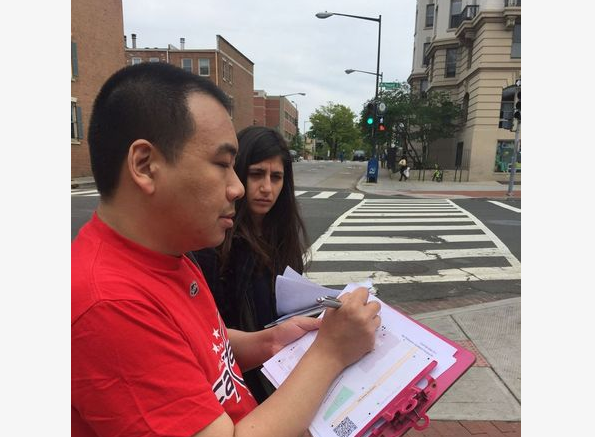
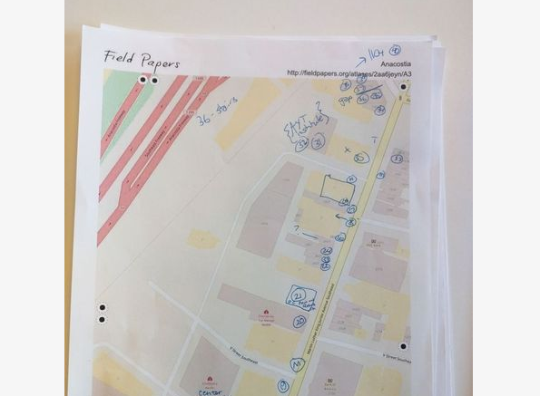
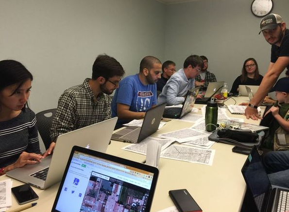
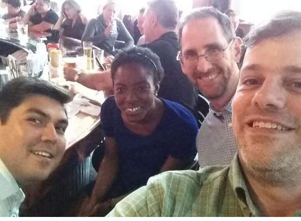

Brian DeRocher
State of the Map US 2019




Hundreds of users may join your Meetup.
But only 2% show up for events.
Many don’t return.
Meetup’s cost of $200 / year is not sustainable.
| year | June | December |
|---|---|---|
| 2019 | $99 | |
| 2018 | $90 | $90 |
| 2017 | $90 | $90 |
| 2016 | $90 | $90 |
| 2015 | $90 | $90 |
| 2014 | $72 | $72 |
| 2013 | $72 |
It doesn’t belong to OpenStreetMap.
What will WeWork do with Meetup?
Will it disappear like GeoCities Google Reader?
It’s not OpenStreetMap specific.
It does not handle coverage, quality assurance, projects.
It does not discover the existing mappers.
The attention of users often diverted to other groups.
micro cosm
small world
Microcosm Roles: members, organizers
| Feature | Group Sketch | MicrocosmApp | OpenStreetMap |
|---|---|---|---|
| groups | yes | yes | yes |
| group map | yes | yes | todo |
| group membership | yes | yes | yes |
| group changeset history | yes | yes | todo |
| group diary entry | yes | no | yes |
| events | no | yes | yes |
| event attendance | no | no | yes |
| discover editors | no | yes | todo |
| welcome new editors | no | yes | todo |
| projects, QA, coverage | no | no | yes |
Feature: Managimg a Microcosm
In order to manage microcosms
as an organizer
I want to create and modify events Background:
Given there is a microcosm "MappingDC", "Washington, DC, USA", "38.9", "-77.03", "38.516 * 10**7", "39.472 * 10**7", "-77.671 * 10**7", "-76.349 * 10**7"
And the microcosm has description "MappingDC strives to improve OSM in the DC area"
And the microcosm has the "Facebook" page "https://facebook.com/groups/mappingdc"
And the microcosm has the "Twitter" page "https://twitter.com/mappingdc"
And the microcosm has the "Website" page "https://mappingdc.org"
And I am on the microcosm "MappingDC" page Scenario: Create an event
Given there is a user "abe@example.com" with name "Abe"
And this user is an organizer of this microcosm
When user "abe@example.com" logs in
And We are on the microcosm "MappingDC" page
And We click "Upcoming Events"
And We click "new event"
And We set the event to "Update DC Bike Lanes", "DC Library", "We will update the dc bike lane data in OSM."
And We submit the form
And We are on the microcosm "MappingDC" page
Then We should see "Update DC Bike Lanes"| Communications | Face |
| Power Users | Hannibal |
| Designers | Murdock |
| Builders | B.A. |
Brian DeRocher
brian@derocher.org
@openbrian